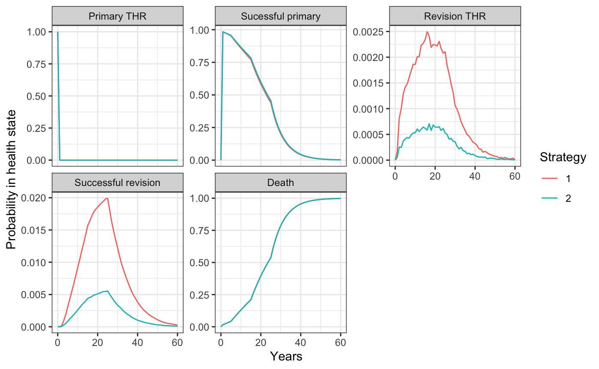

Time inhomogeneous Markov individual-level models
2020-12-28
Source:vignettes/markov-inhomogeneous-indiv.Rmd
markov-inhomogeneous-indiv.RmdOverview
Continuous time state transition models (CTSTMs) are used to simulate trajectories for patients between mutually exclusive health states. Transitions between health states \(r\) and \(s\) for patient \(i\) with treatment \(k\) at time \(t\) are governed by hazard functions, \(\lambda_{rs}(t|x_{ik})\), that can depend on covariates \(x_{ik}\).
Different assumptions can be made about the time scales used to determine the hazards. In a “clock forward” (i.e., Markov) model, time \(t\) refers to time since entering the initial health state. Conversely, in a “clock reset” (i.e., semi-Markov) model, time \(t\) refers to time since entering the current state \(r\), meaning that time resets to 0 each time a patient enters a new state.
While state occupancy probabilities in “clock forward” models can be estimated analytically using the Aalen-Johansen estimator, state occupancy probabilities in “clock reset” models can only be computed in a general fashion using individual patient simulation (IPS). hesim can simulate either “clock forward”, “clock reset” models, or combinations of the two via IPS.
Discounted costs and quality-adjusted life-years (QALYs) are computed using the continuous time present value of a flow of state values—\(q_{hik}(t)\) for utility and \(c_{m, hik}(t)\) for the \(m\)th cost category—that depend on the health state of a patient on a given treatment strategy at a particular point in time. Discounted QALYs and costs given a model starting at time \(0\) with a time horizon of \(T\) are then given by,
\[ \begin{aligned} QALYs_{hik} &= \int_{0}^{T} q_{hik}(t)e^{-rt}dt, \\ Costs_{m, hik} &= \int_{0}^{T} c_{m, hik}(t)e^{-rt}dt, \end{aligned} \]
where \(r\) is the discount rate. Note that unlike in cohort models, costs and QALYs can depend on time since entering a health state in individual-level models; that is, costs and QALYs can also be “clock-reset” or “clock-forward”.
This example will demonstrate the use of IPS to simulate a clock forward model. To facilitate comparison to a cohort approach, we will revisit the total hip replacement (THR) example from the time inhomogeneous Markov cohort modeling vignette. The following R packages will be used during the analysis.
Model setup
The 5 health states—(i) primary THR, (ii) successful primary, (iii) revision THR, (iv) successful revision, and (v) death—-are displayed again for convenience.

We set up the model for two treatment strategies. We will follow the Decision Modeling for Health Economic Evaluation textbook and simulate results for a 60 year-old female. 1,000 patients will be simulated to ensure that results are reasonably stable.
# Treatment strategies strategies <- data.table( strategy_id = 1:2, strategy_name = c("Standard prosthesis", "New prosthesis") ) n_strategies <- nrow(strategies) # Patients n_patients <- 1000 patients <- data.table( patient_id = 1:n_patients, gender = "Female", age = 60 ) # States states <- data.table( state_id = 1:4, state_name = c("PrimaryTHR", "SuccessP", "Revision", "SuccessR") ) # Non-death health states n_states <- nrow(states) # "hesim data" hesim_dat <- hesim_data(strategies = strategies, patients = patients, states = states) print(hesim_dat)
## $strategies
## strategy_id strategy_name
## 1: 1 Standard prosthesis
## 2: 2 New prosthesis
##
## $patients
## patient_id gender age
## 1: 1 Female 60
## 2: 2 Female 60
## 3: 3 Female 60
## 4: 4 Female 60
## 5: 5 Female 60
## ---
## 996: 996 Female 60
## 997: 997 Female 60
## 998: 998 Female 60
## 999: 999 Female 60
## 1000: 1000 Female 60
##
## $states
## state_id state_name
## 1: 1 PrimaryTHR
## 2: 2 SuccessP
## 3: 3 Revision
## 4: 4 SuccessR
##
## attr(,"class")
## [1] "hesim_data"Parameters
Transitions
The possible transitions to and from each state are summarized with a matrix in an individual patient simulation.
state_names <- c("Primary THR", "Sucessful primary", "Revision THR", "Successful revision", "Death") tmat <- rbind(c(NA, 1, NA, NA, 2), c(NA, NA, 3, NA, 4), c(NA, NA, NA, 5, 6), c(NA, NA, 7, NA, 8), c(NA, NA, NA, NA, NA)) colnames(tmat) <- rownames(tmat) <- state_names tmat %>% kable() %>% kable_styling()
| Primary THR | Sucessful primary | Revision THR | Successful revision | Death | |
|---|---|---|---|---|---|
| Primary THR | NA | 1 | NA | NA | 2 |
| Sucessful primary | NA | NA | 3 | NA | 4 |
| Revision THR | NA | NA | NA | 5 | 6 |
| Successful revision | NA | NA | 7 | NA | 8 |
| Death | NA | NA | NA | NA | NA |
Estimates from literature
Transition 1
The model for the first transition determines the time from the original surgery until it is deemed “successful”. In the Markov model, we used model cycles that were 1-year long meaning that this process took 1-year. Since there are no model cycles in a CTSTM, we can be more flexible. Let’s assume that time to recovery (TTR) from surgery takes on average 6 months and follows an exponential distribution.
ttrrPTHR <- 2 # Time to recovery rate implies mean time of 1/2 years
Transition 2
The second transition depends on the operative mortality rate following primary THR (omrPTHR). As in the cohort model we will assume the probability of death (within 1-year) is drawn from a beta distributions.
# 2 out of 100 patients receiving primary THR died omrPTHR_shape1 <- 2 omrPTHR_shape2 <- 98
Below we will convert this probability to a rate so that is can be simulated using an exponential distribution. We write a simple function to do this.
prob_to_rate <- function(p, t = 1){ (-log(1 - p))/t }
Transition 3
Transition 3 depends on the revision rate (rr) for a prosthesis, which will again be modeled using a proportional hazards Weibull model. The coefficients and variance-covariance matrix are displayed below.
print(rr_coef)
## lngamma cons age male np1
## 0.3740968 -5.4909350 -0.0367022 0.7685360 -1.3444740print(rr_vcov)
## lngamma cons age male np1
## lngamma 0.002251512 -0.00569100 2.800000e-08 0.00000510 0.0002590
## cons -0.005691000 0.04321908 -7.830000e-04 -0.00724700 -0.0006420
## age 0.000000028 -0.00078300 2.715661e-05 0.00003300 -0.0001110
## male 0.000005100 -0.00724700 3.300000e-05 0.01189539 0.0001840
## np1 0.000259000 -0.00064200 -1.110000e-04 0.00018400 0.1463686Transition 4
The fourth transition is modeled using the death rate following recovery from the THR (i.e., while in the successful primary state). We will again use age and sex specific mortality rates.
Since we are running the simulation for a 60-year old female, the mortality rate at time \(0\) is \(0.0067\). We are using a clock-forward model, so the hazard depends on time since the start of the model. We can therefore model mortality over time with a piecewise exponential distribution with rates that vary over time. For a 60-year female, the rates will change at 5, 15, and 25 years.
Transition 5
Transition 5 is similar to transition 1 in that it is a function of time to recovery from a THR. While we could again model this process with an exponential distribution, we will instead assume this time is “fixed” for illustration purposes. Specifically, let’s assume it takes one year for every patient.
ttrRTHR <- 1 # There is no rate, the time is fixed
Transition 6
Following the prior example, the sixth transition depends on the operative mortality rate following revision THR (omrRTHR) and the overall mortality rate (mr). The omrRTHR is assumed to follow the same distribution as the omrPTHR.
These probabilities will be converted to rates below and then added to overall mortality rate (mr) at times 0, 5, 15, and 25 years. Transition 6 will consequently be modeled using a piecewise exponential distribution.
Transition 7
The re-revision rate (rrr) is used to model the seventh transition. Like the omrPTHR, the probability is modeled with a beta distribution and will be converted to a rate below.
# 4 out of 100 patients with a successful revision needed another procedure r omrRTHR_shape1 <- 4 omrRTHR_shape2 <- 96
Multi-state model
The transition-specific estimates can be combined to create a multi-state model, which is comprised of survival models for each transition. Since we will perform a probabilistic sensitivity analysis (PSA), we will sample the parameters from the distributions described above. 500 iterations will be used.
n_samples <- 500
Survival models are regression models, so the parameters are regression coefficients. The coefficients of each model must be a matrix (rows for parameter samples and columns for covariates). Since we often use intercept only models, let’s write a simple function to convert a vector to a matrix with a single column for the intercept.
matrixv <- function(v, n = NULL){ if (length(v) == 1) v <- rep(v, n_samples) m <- matrix(v) colnames(m) <- "cons" return(m) }
Our new helper function can then used within define_rng() to sample distributions of the coefficients.
transmod_coef_def <- define_rng({ omrPTHR <- prob_to_rate(beta_rng(shape1 = omrPTHR_shape1, shape2 = omrPTHR_shape2)) mr <- fixed(mr) mr_omrPTHR <- omrPTHR + mr rr <- multi_normal_rng(mu = rr_coef, Sigma = rr_vcov) rrr <- prob_to_rate(beta_rng(shape1 = 4, shape2 = 96)) list( log_omrPTHR = matrixv(log(omrPTHR)), log_mr = lapply(as.list(log(mr)), matrixv), log_ttrrPTHR = matrixv(log(ttrrPTHR)), log_mr_omrPTHR = lapply(as.list(log(mr_omrPTHR)), matrixv), rr_shape = matrixv(rr$lngamma), rr_scale = as.matrix(rr[, -1,]), log_rrr = matrixv(log(rrr)) ) }, n = n_samples) transmod_coef <- eval_rng(transmod_coef_def)
To get a better understanding of the output, lets take a look at a few of the sampled coefficient matrices.
head(transmod_coef$log_omrPTHR)
## cons
## [1,] -3.342051
## [2,] -5.227375
## [3,] -3.795349
## [4,] -4.355687
## [5,] -4.982442
## [6,] -3.763335head(transmod_coef$rr_scale)
## cons age male np1
## [1,] -5.503476 -0.04290975 0.8812245 -1.059610
## [2,] -5.488278 -0.03559472 0.6823182 -1.321794
## [3,] -5.524975 -0.03122224 0.7357637 -1.767539
## [4,] -5.489973 -0.03645523 0.9494905 -1.388949
## [5,] -5.686328 -0.03970532 0.7805760 -1.047210
## [6,] -5.363426 -0.03914919 0.6557874 -1.451593In addition to the coefficients, a complete parameterization of a transition model requires specification of the survival distributions and potentially auxiliary information (e.g., the times at which rates change in a piecewise exponential model). The parameters are stored in a params_surv_list() object, which is a list of params_surv() objects.
transmod_params <- params_surv_list( # 1. Primary THR:Successful primary (1:2) params_surv(coefs = list(rate = transmod_coef$log_ttrrPTHR), dist = "fixed"), # 2. Primary THR:Death (1:5) params_surv(coefs = list(rate = transmod_coef$log_omrPTHR), dist = "exp"), # 3. Successful primary:Revision THR (2:3) params_surv(coefs = list(shape = transmod_coef$rr_shape, scale = transmod_coef$rr_scale), dist = "weibullPH"), # 4. Successful primary:Death (2:5) params_surv(coefs = transmod_coef$log_mr, aux = list(time = c(0, 5, 15, 25)), dist = "pwexp"), # 5. Revision THR:Successful revision (3:4) params_surv(coefs = list(est = matrixv(ttrRTHR)), dist = "fixed"), # 6. Revision THR:Death (3:5) params_surv(coefs = transmod_coef$log_mr_omrPTHR, aux = list(time = c(0, 5, 15, 25)), dist = "pwexp"), # 7. Successful revision:Revision THR (4:3) params_surv(coefs = list(rate = transmod_coef$log_rrr), dist = "exp"), # 8. Successful revision:Death (4:5) params_surv(coefs = transmod_coef$log_mr, aux = list(time = c(0, 5, 15, 25)), dist = "pwexp") )
Utility and costs
Costs and utilities are unchanged from the cohort model. The mean (standard error) of utility are estimated be \(0.85\) (\(0.03\)), \(0.30\) (\(0.03\)), and \(0.75\) (\(0.04\)) in the successful primary, revision, and successful revision health states, respectively.
utility_tbl <- stateval_tbl( data.table(state_id = states$state_id, mean = c(0, .85, .3, .75), se = c(0, .03, .03, .04)), dist = "beta" ) head(utility_tbl)
## state_id mean se
## 1: 1 0.00 0.00
## 2: 2 0.85 0.03
## 3: 3 0.30 0.03
## 4: 4 0.75 0.04The standard prosthesis costs \(£394\) while the new prosthesis costs \(£579\). Both are assumed to be known with certainty.
Since the model assumes that there are no ongoing medical costs, the only remaining cost is the cost of the revision procedure, which was estimated to have a mean of \(£5,294\) and standard error of \(£1,487\).
drugcost_tbl <- stateval_tbl( data.table(strategy_id = rep(strategies$strategy_id, each = n_states), state_id = rep(states$state_id, times = n_strategies), est = c(394, 0, 0, 0, 579, 0, 0, 0)), dist = "fixed" ) medcost_tbl <- stateval_tbl( data.table(state_id = states$state_id, mean = c(0, 0, 5294, 0), se = c(0, 0, 1487, 0)), dist = "gamma", )
Simulation
Constructing the model
The economic model consists of a model for disease progression and models for assigning utility and cost values to health states.
Disease model
The transition model is a function of the parameters of the multi-state model and input data. The input data in this case is a dataset consisting of one row for each treatment strategy and patient. It can be generated using expand.hesim_data().
## strategy_id patient_id strategy_name gender age
## 1: 1 1 Standard prosthesis Female 60
## 2: 1 2 Standard prosthesis Female 60
## 3: 1 3 Standard prosthesis Female 60
## 4: 1 4 Standard prosthesis Female 60
## 5: 1 5 Standard prosthesis Female 60
## 6: 1 6 Standard prosthesis Female 60Since we are using a Weibull regression model to simulate time until a revision hip replacement (Successful primary to Revision THR), we need to create a constant term and covariates for male sex and whether the new prosthesis was used.
transmod_data[, cons := 1] transmod_data[, male := ifelse(gender == "Male", 1, 0)] transmod_data[, np1 := ifelse(strategy_name == "New prosthesis", 1, 0)]
The full transition model is created using the transition parameters, the input data, the transition matrix, and the starting age of the patients. Since we are using a clock-forward model we use the clock = "forward" option.
# Transition model transmod <- create_IndivCtstmTrans(transmod_params, input_data = transmod_data, trans_mat = tmat, clock = "forward", start_age = patients$age)
Cost and utility models
Models based on predicted means (see tparams_mean()) can be created directly from the utility and cost tables using since they do not include covariates and therefore do not require input data.
# Utility utilitymod <- create_StateVals(utility_tbl, n = transmod_coef_def$n, hesim_data = hesim_dat) # Costs drugcostmod <- create_StateVals(drugcost_tbl, n = transmod_coef_def$n, method = "starting", hesim_data = hesim_dat) medcostmod <- create_StateVals(medcost_tbl, n = transmod_coef_def$n, hesim_data = hesim_dat) costmods <- list(Drug = drugcostmod, Medical = medcostmod)
Simulating outcomes
Disease progression
Disease progression is simulated using the $sim_disease() method. Unique trajectories are simulated for each patient, treatment strategy, and PSA sample. Patients transition from an old health state that was entered at time time_start to a new health state at time time_stop. We will simulate the model for 60 years, or equivalently, until they reach a maximum age of 120. As shown by the run time (in seconds), hesim is quite fast.
## user system elapsed
## 2.519 0.145 2.675head(econmod$disprog_)
## sample strategy_id patient_id grp_id from to final time_start time_stop
## 1: 1 1 1 1 1 2 0 0.0000000 0.6931472
## 2: 1 1 1 1 2 5 1 0.6931472 17.2652657
## 3: 1 1 2 1 1 2 0 0.0000000 0.6931472
## 4: 1 1 2 1 2 5 1 0.6931472 6.1759874
## 5: 1 1 3 1 1 2 0 0.0000000 0.6931472
## 6: 1 1 3 1 2 5 1 0.6931472 6.9079180The simulated patient trajectories can be summarized by computing the probability of being in each health state over time (by averaging across the simulated patients). Here, we will compute state occupancy probabilities at yearly intervals. They are generally quite similar to those in the cohort model.
econmod$sim_stateprobs(t = 0:60)

Costs and QALYs
Following the cohort model, we simulate costs and QALYs with 6% and 1.5% discount rates, respectively. While we are currently assuming that costs and QALYs are constant over time, we could have let them depend on time since entering a health state by setting time_reset = TRUE in the StateVals objects.
Mean costs and QALYs for each PSA sample are computed with the $summarize() method. Costs are very similar to the cohort model. Conversely, QALYs are slightly higher in the IPS since we assumed that patients remained in the primary THR (with utility = 0) state for longer than in the cohort model. This difference not only suggests that results may be sensitive to this assumption, but also shows that the flexibility of individual-level models may make them more realistic than cohort models.
## strategy_id mean
## 1: 1 15.22754
## 2: 2 15.28137## strategy_id mean
## 1: 1 513.3161
## 2: 2 611.9449Decision analysis
Since we performed a PSA, decision uncertainty could be formally quantified. Since we cover that in detail in the cost-effectiveness analysis vignette, we will simply compute the incremental cost-effectiveness ratio (ICER) here.
cea_pw_out <- cea_pw(ce_sim, comparator = 1, dr_qalys = 0.015, dr_costs = .06, k = seq(0, 25000, 500)) icer_tbl(cea_pw_out)
## 1 2
## Incremental QALYs "-" "0.05 (-0.49, 0.56)"
## Incremental costs "-" "99 (-1, 160)"
## Incremental NMB "-" "2,593 (-24,777, 28,068)"
## ICER "-" "1,832"
## Conclusion "-" "Cost-effective"